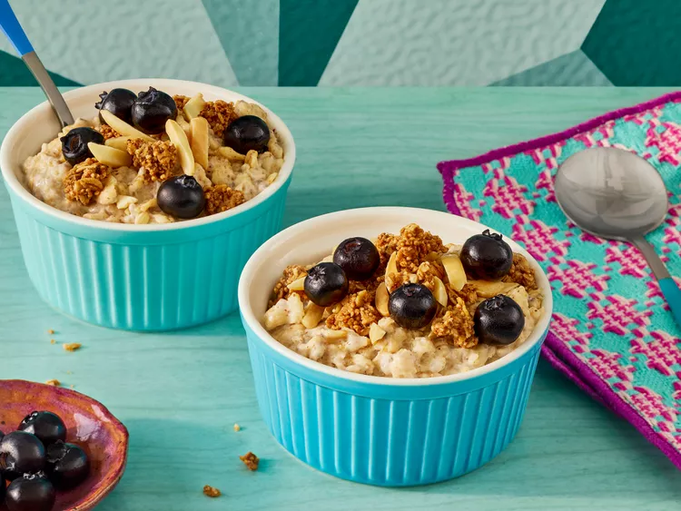

Home
Chia Seed Overnight Oats

Description
These chia seed overnight oats are a fun fusion between chia pudding and overnight oats. Vanilla yogurt and almond butter make this a healthy protein-rich breakfast choice. Top with fruit, nuts, and granola of your choice.
Ingredients
- 1 1/4 cups oat milk
- 3/4 cup rolled oats
- 1/4 cup vanilla yogurt
- 1 tablespoon chia seeds
- 1 tablespoon almond butter
Toppings (optional)
- fresh berries
- 1/4 cup slivered almonds
- 1/2 cup granola
Steps
- Combine oat milk, oats, vanilla yogurt, chia seeds, and almond butter in a large container (or divide into several smaller containers) and stir until well combined. Wait for 3 minutes, then stir again.
- Cover and refrigerate for at least 1 hour, ideally overnight.
- When ready to eat add toppings of your choice, and serve immediately.